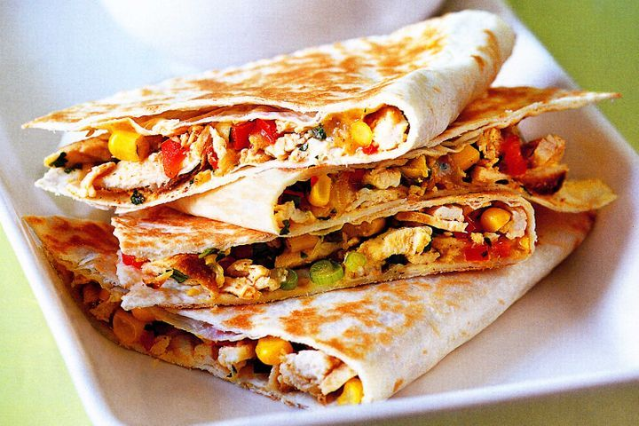

Quesadilla

Description
Quesadillas are simple and fast.
It is easy to add healthy elements to this meal.
Ingredients
- Flour tortilla
- 1 cup black beans
- Diced onion
- Diced green peppers
- Shredded cheese
- Hot sauce and sour cream
Steps
- Fry onion, peppers and black beans in oil over medium
- Set aside
- In clean pan, fry tortilla until crispy
- Load fillings into tortolla and sprinkle with cheese
- Serve with sauces, slice into triangles